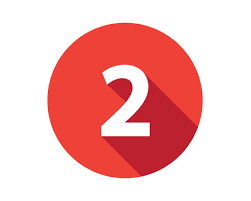

Crear una web con dos imágenes cualesquiera 1.jpeg y 2.jpeg. Controlar el evento onmouseover de ambas imágenes para que cuando el usuario pase con el ratón se intercambien las imágenes de sitio. Usarás el if para saber que imagen hay en cada posición.
